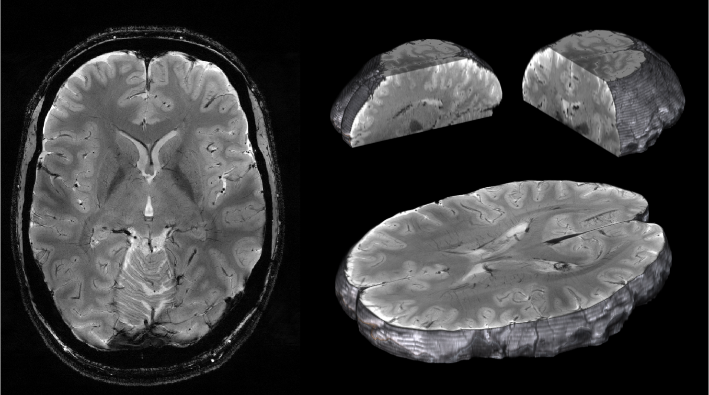
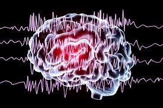
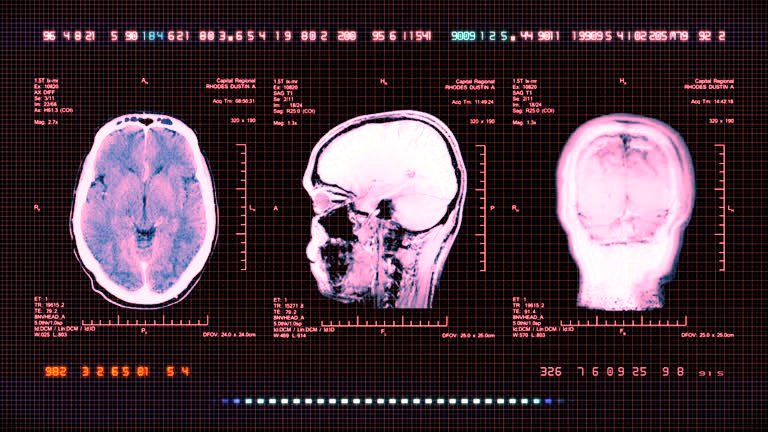
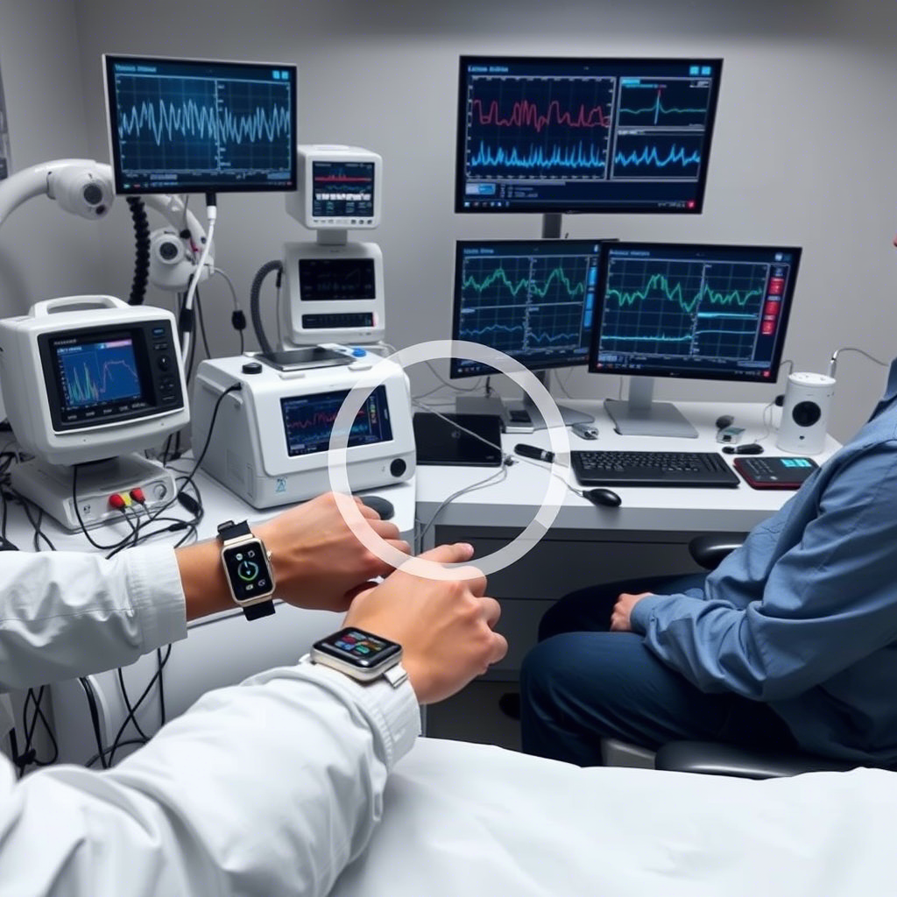

Rivoluzione nella Gestione delle Patologie Neurologiche
NeuroTwin utilizza tecnologie avanzate di intelligenza artificiale per creare gemelli digitali del cervello, permettendo previsioni accurate, monitoraggio continuo e terapie personalizzate.

NeuroTwin utilizza tecnologie avanzate di intelligenza artificiale per creare gemelli digitali del cervello, permettendo previsioni accurate, monitoraggio continuo e terapie personalizzate.
Una piattaforma integrata che combina dati clinici, imaging avanzato e AI per rivoluzionare la neurologia
NeuroTwin raccoglie e integra dati da MRI, EEG, CT e altre fonti cliniche per creare un profilo completo del paziente.
Algoritmi di machine learning analizzano i dati per identificare modelli e prevedere l'evoluzione delle patologie.
Il gemello digitale si aggiorna in tempo reale, permettendo un monitoraggio costante e interventi tempestivi.
NeuroTwin offre una dashboard unificata che combina tutte le fonti di dati in visualizzazioni intuitive e interattive.


Imaging a risonanza magnetica

Elettroencefalogramma

Tomografia computerizzata

Parametri e storia clinica
Strumenti avanzati per ottimizzare il processo decisionale clinico
Interfaccia personalizzabile che unifica tutti i dati del paziente in un'unica vista organizzata.

Strumenti per tracciare l'efficacia delle terapie e suggerire aggiustamenti in tempo reale.
Generazione automatica di report dettagliati con analisi predittive e raccomandazioni.
NeuroTwin integra algoritmi di AI che analizzano migliaia di casi simili per fornire raccomandazioni terapeutiche personalizzate.
La nostra piattaforma riduce gli errori diagnostici e migliora l'efficacia delle terapie attraverso analisi predittive avanzate.
Scopri i casi di studioNeuroTwin è disponibile per ospedali, cliniche e centri di ricerca in tutta Italia.